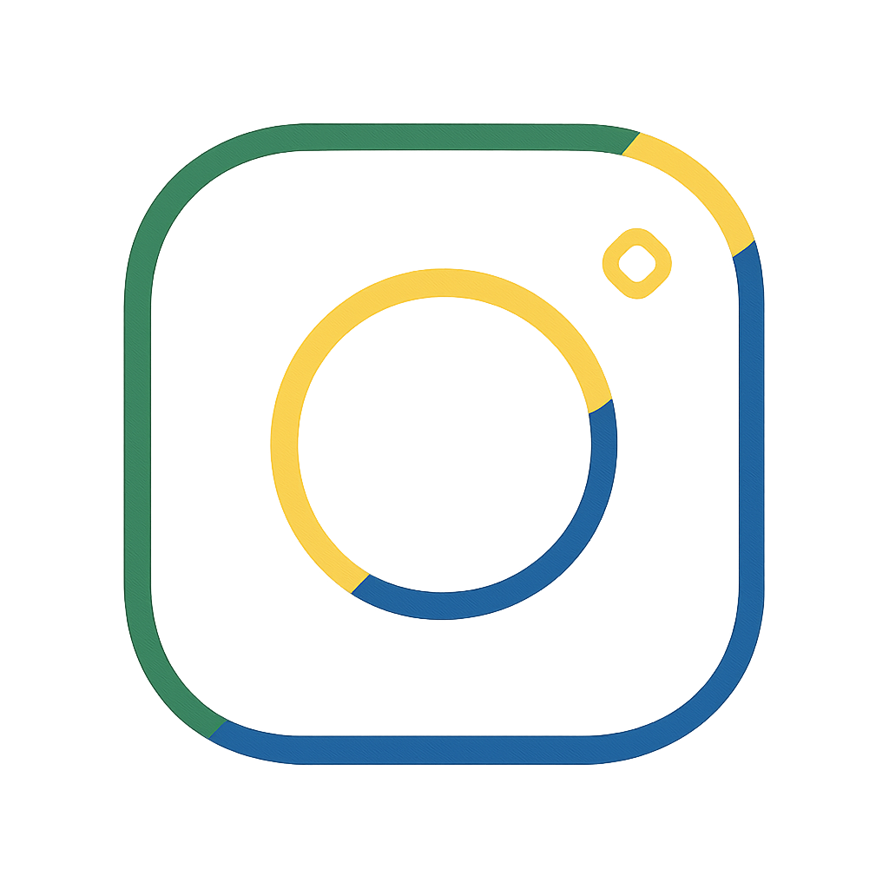

Vitor e Isha
Descubra o Rio com um casal intercultural!
🔥 🎥 Vídeos que bombaram
💼 Mídia Kit + Contato para Parcerias
🌍 Experiência Turística Personalizada
✈️ Roteiros e Lugares Incríveis em Niterói
💰 Guia de Economia para sua Próxima Viagem
